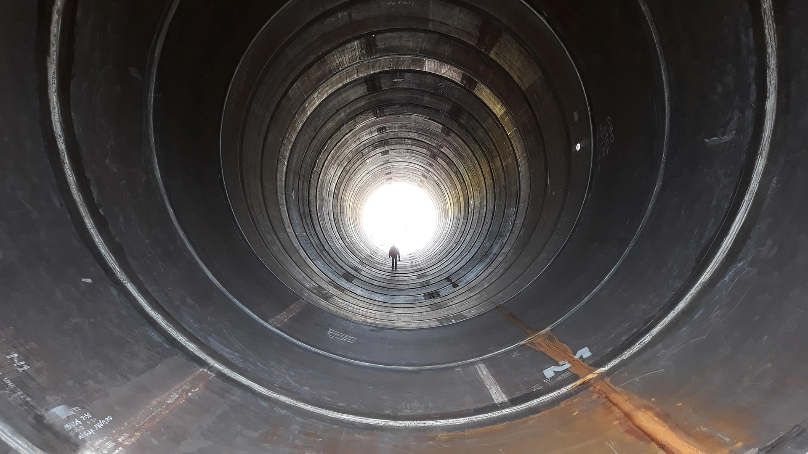

Offshore wind / Northland Power
Offshore windpark Deutsche Bucht
Deutsche Bucht ligt circa 95 kilometer ten noordwesten van Borkum in de Duitse Bocht. Het windpark bestaat uit 31 turbines en heeft een vermogen van 252 MW.
TJ ENTERPRISEQUALITY ENGINEERING · ASSURANCE · CONTROL
Projectcontext
Een offshoreproject met een eigen schaal.
Deutsche Bucht ligt circa 95 kilometer ten noordwesten van Borkum in de Duitse Bocht. Het windpark bestaat uit 31 turbines en heeft een vermogen van 252 MW.
De onderstaande kerngegevens beschrijven de openbare projectcontext. Neem contact op voor informatie over de specifieke rol van TJ Enterprise binnen dit project.